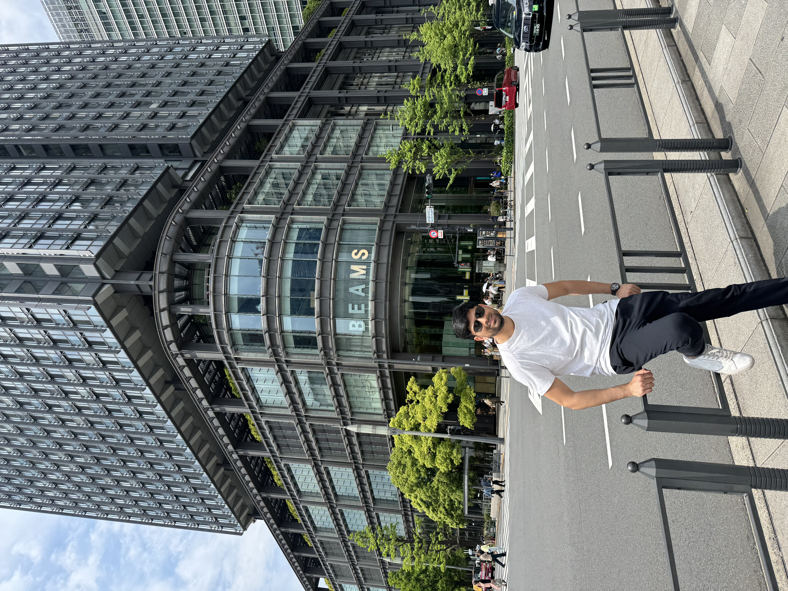
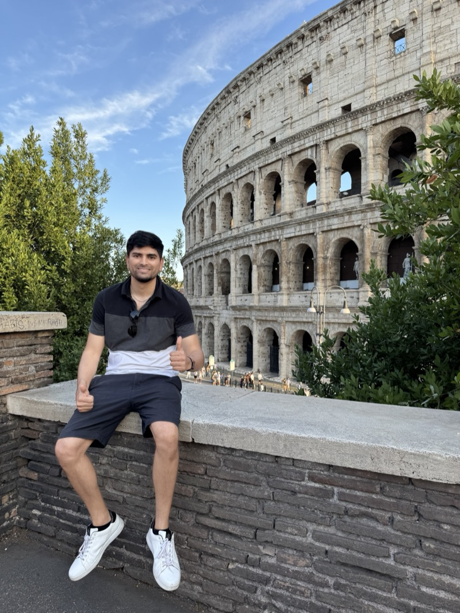
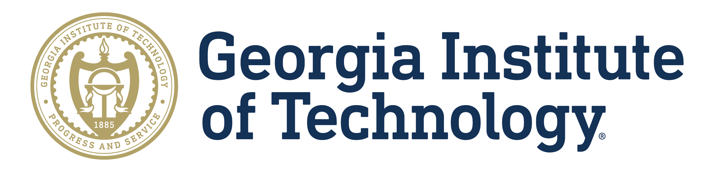
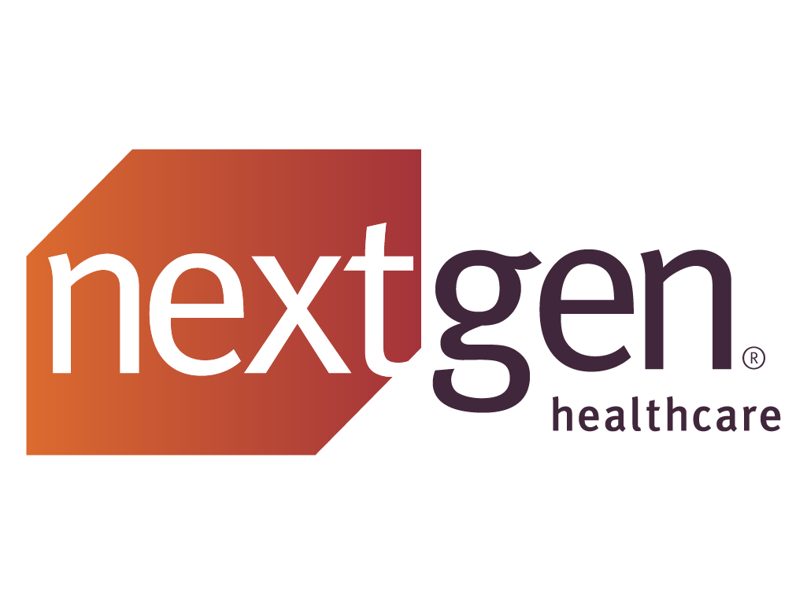
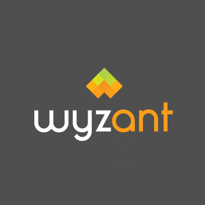
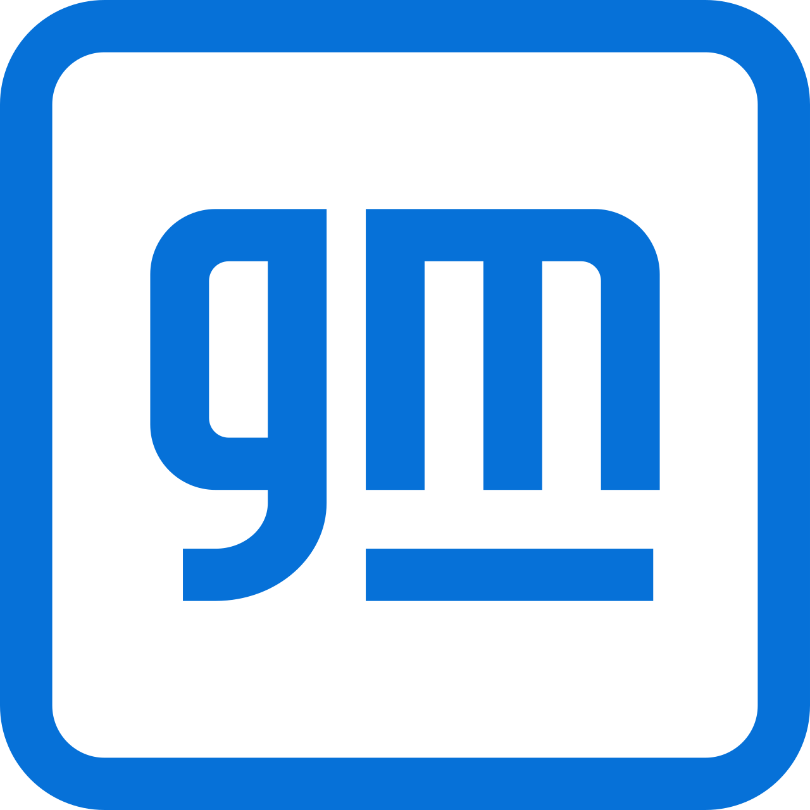
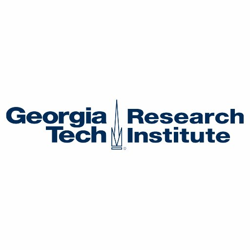

Hi, I'm
Engineering professional with 10+ years building robust production systems across AI/ML, full-stack development, security, and cross-platform infrastructure.


I'm a software engineer with experience building production systems across cross-platform device management, AI-powered workflows, cloud infrastructure, and security. At Microsoft, I build device management software for Apple and Linux devices, with work spanning authentication, enrollment, service integrations, secure communications, and launch readiness for new OS releases. I've resolved incidents affecting tens of thousands of devices and built automation that became a standard across the organization. I also use AI to improve engineering workflows within my team and share successful approaches with other teams when they offer broader value.
My recent experience also includes two AI-powered engineering projects. I contributed to a systems engineering product involving citations and traceability, backend services, graph-based access control, authentication, and AWS infrastructure. I also worked on an agentic CAD system designed to automate geometry creation and mechanical-engineering workflows, contributing to multi-model orchestration, verification tooling, and fine-tuning pipelines.
I hold an M.S. in Computer Science, focused on Machine Learning, Computational Perception, and Robotics, and a B.S. in Computer Engineering, focused on Distributed Systems and Robotics, from Georgia Tech. I enjoy solving problems at the intersection of software engineering, AI, infrastructure, and security, particularly when complex workflows can be transformed into reliable, practical tools.

Georgia Institute of TechnologyApr 2021 — Present
Own cross-platform device management software for Apple and Linux devices. Drive security, automation, and AI adoption across the org. Resolved critical incidents impacting tens of thousands of devices. Built tenant automation that became the org-wide baseline. Lead launch-day readiness for major Apple and Linux OS releases, including upgrading dependencies, migrating libraries to modern frameworks, and ensuring CI pipeline compatibility. Built and maintained core platform components across all three clients including authentication, enrollment flows, service integrations, derived credentials, certificate migrations, and secure communications. Conducted privacy reviews and threat modeling for new features and services.

Oct 2019 — Apr 2021
Worked on a large-scale EHR/EMS application. Developed inbound/outbound message processors and S3 client service for improving reimbursement and monitoring RCM profitability. Built ML-based customer attrition prediction using time series forecasting based on encounters, claims, and login rates. Developed Jenkins deployment pipelines for standalones/code extractors, loading into Oracle, priming Redis cache, and reindexing search modules. Wrote ETL replication scripts in Redshift for star schema reporting. Created bidirectional SOAP services for states' immunization registries. Rebuilt EHR auditing feature for accurate reconstruction of patient chart changes. Redesigned Patient Portal using Vonage API and created a VR conversational agent using AWS Sumerian/Lex.

Aug 2019 — Feb 2022
Supported undergraduate and graduate students with university coursework in programming, data structures, mathematics, and related technical subjects. Provided individualized guidance to help students understand course concepts, solve problems, and complete assignments. Mentored students in Cloud DevOps, providing guidance on software development and deployment practices.

Jan 2016 — Oct 2019
Built and maintained Adobe AEM components for GM's global employee websites and portals. Integrated Adobe Analytics for customized click tracking, activity monitoring, and impression analysis across global GM sites. Developed dynamic UI components using Kollective/BrightCove APIs and modified news aggregators to personalize article listings. Implemented a Spring Boot application for archival/ingestion of global GM News and site content. Built employee portals using Workday API with SOAP and integrated SSO authentication. Developed predictive IT dashboards using Python, Microsoft Cognitive Services, and PowerBI. Won 1st place at a GM hackathon with a sentiment analysis model built on scraped social media data to predict marketing campaign effectiveness.

Jan 2014 — Aug 2015
Developed object recognition APIs for deformable modeling research: 3D pose estimation from depth maps, multi-scale HOG feature extraction, SVM, and KNNs. Built the visual servoing system for a Baxter Robot using ROS, OpenCV, and Xbox Kinect v2 for 3D depth sensing, researching its viability in industrial settings. Developed Baxter calibration using TF publishers and listeners to convert Kinect point clouds to robot coordinates, with C++ bridging PCL and TF libraries.
Built Graph API-based test tenant automation that became the baseline across multiple teams. Saved days-to-weeks of manual setup per team. Authored and published comprehensive provisioning guidance in the engineering hub.
Built the computer vision and control system for a Baxter Robot at GTRI, researching its viability for industrial automation. Used ROS and Xbox Kinect v2 for 3D depth sensing. Developed Baxter calibration with TF publishers/listeners to convert Kinect point clouds to robot coordinates. Wrote C++ to bridge PCL and TF libraries, with launch files for streamlined deployment. Got the system fully operational for visual servoing in an industrial research setting.
Built AI copilot agents that analyze device enrollment, compliance, security configurations, and policy conflicts across Apple, Linux, and Windows, generating actionable reports to optimize security posture. Demoed to the team and joined an AI + Productivity working group to expand AI adoption across the org.
Won 1st place at a GM company hackathon with a sentiment analysis model built on scraped social media data to predict marketing campaign effectiveness.
Led the response to Azure Front Door changes impacting iOS and macOS client traffic. Directed testing of core enrollment and check-in flows, baselined network telemetry, and coordinated post-change monitoring to prevent customer impact during rollout. Built a telemetry analysis agent to detect regressions and issues during the AFD rollout.
Contributed across the full stack of an AI-powered CAD generation platform that transforms natural-language prompts into LLM-generated CadQuery code and interactive 3D renders. Built multi-LLM orchestration, candidate generation, viewer UX, verification tooling, and a fine-tuning pipeline using open CAD datasets, synthetic tessellation-verified examples, LoRA, Qwen2.5-Coder-7B, and RunPod serverless inference.
Contributed to the citations and traceability system and core backend for an AI-powered MBSE platform. Built AWS ECS production infrastructure, migrated task processing to asynchronous Redis queues, moved RBAC from MongoDB to Neo4j, led the Auth0-to-Keycloak migration, and supported SOC 2 compliance and technical recruiting.
Continuous state-space reinforcement learner that simulates trading for small and large cap stocks using historical data and technical indicators.
Built a patient readmission prediction tool using fuzzy sets, C-Means clustering, and KNNs to reduce surgical readmission rates.
Android app leveraging IBM Watson's Discovery API to analyze business application health and surface actionable insights.
Built CLI-based agents to automate developer workflows across the Intune org — tenant provisioning, release tracking, and process orchestration.
Outside of work, I'm a lifelong English football fan. Growing up in the UK, I came to follow most English sports, and I still enjoy playing pickup soccer whenever I can. Staying active is important to me, so working out is also a regular part of my routine. I occasionally follow the NBA playoffs, tennis, and darts, and I enjoy spending time with friends, exploring new places, and heading back to the UK to visit family. I'm always up for a good conversation or a match day.
I'm interested in technical leadership roles at the intersection of AI, infrastructure, and security. Let's talk.
Say Hello